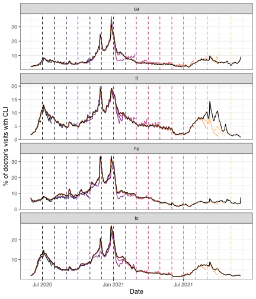

In addition to the epi_df data structure, which we have been working with all along in these vignettes, the epiprocess package has a companion structure called epi_archive. In comparison to an epi_df object, which can be seen as storing a single snapshot of a data set with the most up-to-date signal values as of some given time, an epi_archive object stores the full version history of a data set. Many signals of interest for epidemiological tracking are subject to revision (some more than others), and paying attention to data revisions can be important for all sorts of downstream data analysis and modeling tasks.
This chapter walks through working with epi_archive objects and demonstrates some of their key functionality. We’ll work with a signal on the percentage of doctor’s visits with CLI (COVID-like illness) computed from medical insurance claims, available through the COVIDcast API. This signal is subject to very heavy and regular revision; you can read more about it on its API documentation page. We’ll use the offline version stored in {epidatasets}.
7.1 Getting data into epi_archive format
An epi_archive object can be constructed from a data frame, data table, or tibble, provided that it has (at least) the following columns:
geo_value: the geographic value associated with each row of measurements.
time_value: the time value associated with each row of measurements.
version: the time value specifying the version for each row of measurements. For example, if in a given row the version is January 15, 2022 and time_value is January 14, 2022, then this row contains the measurements of the data for January 14, 2022 that were available one day later.
As we can see from the above, the data frame returned by epidatr::covidcast() has the columns required for the epi_archive format, so we use as_epi_archive() to cast it into epi_archive format.1
x <- archive_cases_dv_subset_dt %>%select(geo_value, time_value, version, percent_cli) %>%as_epi_archive(compactify =TRUE)class(x)
#> [1] "epi_archive" "R6"
print(x)
#> An `epi_archive` object, with metadata:
#> * geo_type = state
#> * time_type = day
#> ----------
#> * min time value = 2020-06-01
#> * max time value = 2021-11-30
#> * first version with update = 2020-06-02
#> * last version with update = 2021-12-01
#> * No clobberable versions
#> * versions end = 2021-12-01
#> ----------
#> Data archive (stored in DT field): 119316 x 4
#> Columns in DT: geo_value, time_value, version, percent_cli
#> ----------
#> Public R6 methods: initialize, print, as_of, fill_through_version,
#> truncate_versions_after, merge, group_by, slide, clone
An epi_archive is special kind of class called an R6 class. Its primary field is a data table DT, which is of class data.table (from the data.table package), and has columns geo_value, time_value, version, as well as any number of additional columns.
class(x$DT)
#> [1] "data.table" "data.frame"
head(x$DT)
#> geo_value time_value version percent_cli
#> 1: ca 2020-06-01 2020-06-02 NA
#> 2: ca 2020-06-01 2020-06-06 2.140116
#> 3: ca 2020-06-01 2020-06-08 2.140379
#> 4: ca 2020-06-01 2020-06-09 2.114430
#> 5: ca 2020-06-01 2020-06-10 2.133677
#> 6: ca 2020-06-01 2020-06-11 2.197207
The variables geo_value, time_value, version serve as key variables for the data table, as well as any other specified in the metadata (described below). There can only be a single row per unique combination of key variables, and therefore the key variables are critical for figuring out how to generate a snapshot of data from the archive, as of a given version (also described below).
key(x$DT)
#> Error in key(x$DT): could not find function "key"
In general, the last version of each observation is carried forward (LOCF) to fill in data between recorded versions. A word of caution: R6 objects, unlike most other objects in R, have reference semantics. An important consequence of this is that objects are not copied when modified.
original_value <- x$DT$percent_cli[1]y <- x # This DOES NOT make a copy of xy$DT$percent_cli[1] <-0head(y$DT)
#> geo_value time_value version percent_cli
#> 1: ca 2020-06-01 2020-06-02 0.000000
#> 2: ca 2020-06-01 2020-06-06 2.140116
#> 3: ca 2020-06-01 2020-06-08 2.140379
#> 4: ca 2020-06-01 2020-06-09 2.114430
#> 5: ca 2020-06-01 2020-06-10 2.133677
#> 6: ca 2020-06-01 2020-06-11 2.197207
head(x$DT)
#> geo_value time_value version percent_cli
#> 1: ca 2020-06-01 2020-06-02 0.000000
#> 2: ca 2020-06-01 2020-06-06 2.140116
#> 3: ca 2020-06-01 2020-06-08 2.140379
#> 4: ca 2020-06-01 2020-06-09 2.114430
#> 5: ca 2020-06-01 2020-06-10 2.133677
#> 6: ca 2020-06-01 2020-06-11 2.197207
x$DT$percent_cli[1] <- original_value
To make a copy, we can use the clone() method for an R6 class, as in y <- x$clone(). You can read more about reference semantics in Hadley Wickham’s Advanced R book.
7.2 Some details on metadata
The following pieces of metadata are included as fields in an epi_archive object:
geo_type: the type for the geo values.
time_type: the type for the time values.
additional_metadata: list of additional metadata for the data archive.
Metadata for an epi_archive object x can be accessed (and altered) directly, as in x$geo_type or x$time_type, etc. Just like as_epi_df(), the function as_epi_archive() attempts to guess metadata fields when an epi_archive object is instantiated, if they are not explicitly specified in the function call (as it did in the case above).
7.3 Producing snapshots in epi_df form
A key method of an epi_archive class is as_of(), which generates a snapshot of the archive in epi_df format. This represents the most up-to-date values of the signal variables as of a given version. This can be accessed via x$as_of() for an epi_archive object x, but the package also provides a simple wrapper function epix_as_of() since this is likely a more familiar interface for users not familiar with R6 (or object-oriented programming).
#> An `epi_df` object, 1,460 x 3 with metadata:
#> * geo_type = state
#> * time_type = day
#> * as_of = 2021-06-01
#>
#> # A tibble: 1,460 × 3
#> geo_value time_value percent_cli
#> * <chr> <date> <dbl>
#> 1 ca 2020-06-01 2.75
#> 2 ca 2020-06-02 2.57
#> 3 ca 2020-06-03 2.48
#> 4 ca 2020-06-04 2.41
#> 5 ca 2020-06-05 2.57
#> 6 ca 2020-06-06 2.63
#> # ℹ 1,454 more rows
max(x_snapshot$time_value)
#> [1] "2021-05-31"
attributes(x_snapshot)$metadata$as_of
#> [1] "2021-06-01"
We can see that the max time value in the epi_df object x_snapshot that was generated from the archive is May 29, 2021, even though the specified version date was June 1, 2021. From this we can infer that the doctor’s visits signal was 2 days latent on June 1. Also, we can see that the metadata in the epi_df object has the version date recorded in the as_of field.
By default, using the maximum of the version column in the underlying data table in an epi_archive object itself generates a snapshot of the latest values of signal variables in the entire archive. The epix_as_of() function issues a warning in this case, since updates to the current version may still come in at a later point in time, due to various reasons, such as synchronization issues.
Below, we pull several snapshots from the archive, spaced one month apart. We overlay the corresponding signal curves as colored lines, with the version dates marked by dotted vertical lines, and draw the latest curve in black (from the latest snapshot x_latest that the archive can provide).
ggplot( snapshots %>%filter(!latest),aes(x = time_value, y = percent_cli)) +geom_line(aes(color =factor(version)), na.rm =TRUE) +geom_vline(aes(color =factor(version), xintercept = version), lty =2) +facet_wrap(~geo_value, scales ="free_y", ncol =1) +scale_x_date(minor_breaks ="month", date_labels ="%b %Y") +scale_color_viridis_d(option ="A", end = .9) +labs(x ="Date", y ="% of doctor's visits with CLI") +theme(legend.position ="none") +geom_line(data = snapshots %>%filter(latest),aes(x = time_value, y = percent_cli),inherit.aes =FALSE, color ="black", na.rm =TRUE )

We can see some interesting and highly nontrivial revision behavior: at some points in time the provisional data snapshots grossly underestimate the latest curve (look in particular at Florida close to the end of 2021), and at others they overestimate it (both states towards the beginning of 2021), though not quite as dramatically. Modeling the revision process, which is often called backfill modeling, is an important statistical problem in it of itself.
7.4 Merging epi_archive objects
Now we demonstrate how to merge two epi_archive objects together, e.g., so that grabbing data from multiple sources as of a particular version can be performed with a single as_of call. The epi_archive class provides a method merge() precisely for this purpose. The wrapper function is called epix_merge(); this wrapper avoids mutating its inputs, while x$merge will mutate x. Below we merge the working epi_archive of versioned percentage CLI from outpatient visits to another one of versioned COVID-19 case reporting data, which we fetch the from the COVIDcast API, on the rate scale (counts per 100,000 people in the population).
When merging archives, unless the archives have identical data release patterns, NAs can be introduced in the non-key variables for a few reasons: - to represent the “value” of an observation before its initial release (when we need to pair it with additional observations from the other archive that have been released) - to represent the “value” of an observation that has no recorded versions at all (in the same sort of situation) - if requested via sync = "na", to represent potential update data that we do not yet have access to (e.g., due to encountering issues while attempting to download the currently available version data for one of the archives, but not the other).
# This code is for illustration and doesn't run.# The result is saved/loaded in the (hidden) next chunk from `{epidatasets}`y <-covidcast(data_source ="jhu-csse",signals ="confirmed_7dav_incidence_prop",time_type ="day",geo_type ="state",time_values =epirange(20200601, 20211201),geo_values ="ca,fl,ny,tx",issues =epirange(20200601, 20211201)) %>%fetch() %>%select(geo_value, time_value, version = issue, case_rate_7d_av = value) %>%as_epi_archive(compactify =TRUE)x$merge(y, sync ="locf", compactify =FALSE)print(x)head(x$DT)
#> An `epi_archive` object, with metadata:
#> * geo_type = state
#> * time_type = day
#> ----------
#> * min time value = 2020-06-01
#> * max time value = 2021-11-30
#> * first version with update = 2020-06-02
#> * last version with update = 2021-12-01
#> * No clobberable versions
#> * versions end = 2021-12-01
#> ----------
#> Data archive (stored in DT field): 129638 x 5
#> Columns in DT: geo_value, time_value, version, percent_cli and 1 more columns
#> ----------
#> Public R6 methods: initialize, print, as_of, fill_through_version,
#> truncate_versions_after, merge, group_by, slide, clone
#> geo_value time_value version percent_cli case_rate_7d_av
#> 1: ca 2020-06-01 2020-06-02 NA 6.628329
#> 2: ca 2020-06-01 2020-06-06 2.140116 6.628329
#> 3: ca 2020-06-01 2020-06-07 2.140116 6.628329
#> 4: ca 2020-06-01 2020-06-08 2.140379 6.628329
#> 5: ca 2020-06-01 2020-06-09 2.114430 6.628329
#> 6: ca 2020-06-01 2020-06-10 2.133677 6.628329
Importantly, see that x$merge mutated x to hold the result of the merge. We could also have used xy = epix_merge(x, y) to avoid mutating x. See the documentation for either for more detailed descriptions of what mutation, pointer aliasing, and pointer reseating is possible.
7.5 Sliding version-aware computations
Note
TODO: need a simple example here.
For a discussion of the removal of redundant version updates in as_epi_archive using compactify, please refer to the compactify vignette.↩︎